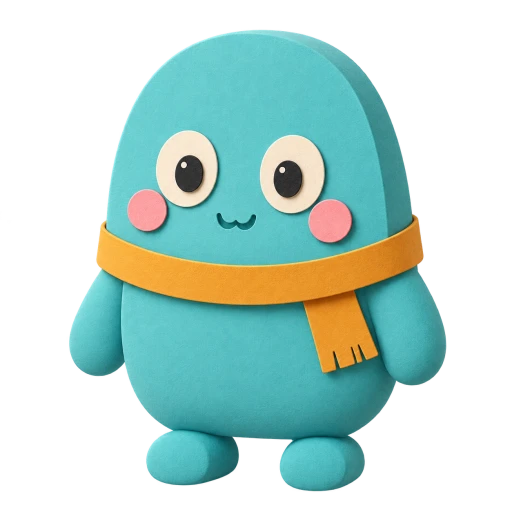
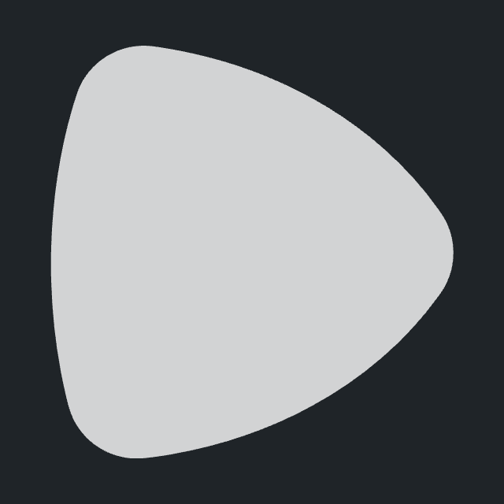
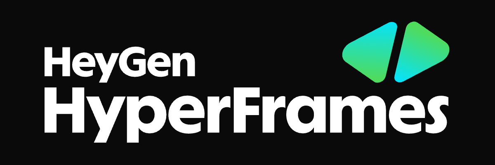

거창한 거 없는 AI지식
좁밥AI
말로만 하지 않고 실제로 보여드립니다.
에이전트 브라우저
이전 Playwright — 코드로 크롬을 조작하는, 테스트 위주 도구 → 지금 말로 시키는 Aside · Ego Lite
Ego Lite
시연
직접 보여드릴게요. 여담 이제 크몽에서 매크로 만들던 사람들은 다 망했다.
01KTX 표 시간 찾기
실제로 Aside에 물어본 문장 그대로 → 잔여석까지 확인
야 울산 통도사역 가는 거 10월 4일 일요일일 거야. 내가 7-8시 꺼 예매했는데 그 뒤에 거 서울역에서 출발하는 거 유효한 거 있는지 찾아봐
02모돌이 사료 찾기
미니비숑 강아지 · 조건 비교 → 후보 정리
네이버쇼핑에서 미니비숑 성견 [5kg]용 소형견 사료를 찾아줘. 후보 3개를 골라 kg당 가격·주요 성분·리뷰 평점을 표로 비교하고, 하나를 추천해줘. 구매는 하지 마.
03쿠팡 쇼핑
조건 찾기 → 비교 → 장바구니
쿠팡에서 [강아지 배변패드 100매]를 검색해 로켓배송 가능한 상품 중 별점 4.5 이상 3개를 가격순으로 비교하고, 1위 상품을 장바구니에 담아줘. 결제는 하지 마.
04네이버 쇼핑
같은 상품 가격·옵션 비교
네이버쇼핑에서 [에어팟 프로]의 판매처 5곳을 찾아 가격·배송비·옵션(색상·용량)을 표로 정리하고, 배송비 포함 최저가를 알려줘. 구매는 하지 마.
05인프런 수강체크하기
내 강의 · 어디까지 들었는지 확인
인프런 들어가서 내가 듣고 있는 강의 목록 열고, 각각 어디까지 들었는지 진도 확인해서 다음에 볼 강의 알려줘
06룰루랄라에서 연성소 남아있는 거 찾기
사내 사이트 · 조건 확인 → 남은 자리 정리
룰루랄라 들어가서 연성소 남아있는 거 있는지 찾아봐. [10월 첫째 주] 기준으로 날짜별 남은 자리 정리해줘. 예약은 하지 마
대표적인 데스크탑 프로그램 2개
Claude Desktop
문서 분석 · 문서/PDF · 발표자료
Codex 앱 · ChatGPT
예약 작업 · 브라우저 자료조사 → 예: 돈복사
“그래서 뭐 하는데요?”돈복사 — 직접 만든 시장 리서치 사이트 ↗
사내에는 곧 이거 쓰면 됨
택가이 데스크탑
진짜로 개인화 에이전트의 시대
 OpenClaw · 오픈클로
OpenClaw · 오픈클로
Hermes · 헤르메스
오픈클로 터미널 · Web UI 사용 흐름
진짜 대화형 에이전트 생성기
TUI — 터미널
텔레그램 테스트 메시지 전송
Web UI — 브라우저
같은 세션 채팅 화면
개인비서? ㄴㄴ 그냥 개인 잡일꾼
거창할 거 없다. 활용도는 무한대.
① 테스트 메시지 수신
② 자동차 에어컨 필터 조사
③ 호텔 서비스 조사
개발만 하는 도구가 아님
개인적으로는, 앞에서 본 작업들의 종합세트.
Claude Code
Codex
사내에서는 이거 쓰면 됩니다
택가이코드 · CLI
택가이코드 · VS Code 확장
대표적인 예시 설명
“주어진 예보 자료를 보면, 비가 올 것 같아?”
LLM · 문장형 출력 예시
“비가 올 가능성이 높습니다.
우산을 챙기세요.”
다음 토큰을 차례로 생성
Jev · 판단 출력 개념 예시
{ "비": 0.95, "비_아님": 0.05 }미리 정의한 선택지·점수의 판단
설명을 위한 가상 값 · 실제 예보/호출 결과 아님TypeSafe 공식 안내 · 실제 화면
LLM도 물론 이렇게 가능한데, 세팅해서 구조가 다르다고 한다. 궁금하지 않다.
답변을 확률로 뱉어요
State상황을 JSON으로
Questions판단 항목 정의 (Noul)
Response항목별 true 확률
TypeSafe Playground
jev-1.13.0 · 실제 실행 화면 · 108ms
OpenAI에서 만든 Decisions API
OpenAI 공식: “사용자가 정의한 질문 집합에 Luna의 지능을 집중, 답은 미리 정해진 유한한 선택지로 제한.”
정해둔 질문 집합 + 유한한 선택지맥락은 텍스트 · 이미지로 제공
→Luna 기반 Decisions API실시간 의사결정 · 기사 기준 150ms
→선택지별 답 · 신뢰도 점수콘텐츠 분류 · 요청 라우팅 · 에이전트 다음 행동
| 일반 챗 모델 + 프롬프트 | 별도 소형 분류기 | Decisions API | |
|---|---|---|---|
| 방식 | 분류를 말로 시킨다 | 데이터로 따로 학습 | 질문 + 선택지를 프롬프트로 지정 |
| 속도 | 느림 · 1.6초 GPT-6 Luna 일반 응답 | 빠름 | 150ms 기사 기준 · 약 10배 |
| 항목이 바뀌면 | 프롬프트 수정 | 다시 학습 | 후보만 다시 지정 · 재학습 없음 |
| 결과 | 문장 | 라벨 | 선택지별 답 + 신뢰도 점수 |
Codex v2 · 60초
코드 어시스턴트로 쓰는 영상 편집 도구
가장 좋은 오픈소스 두 가지 — Remotion · Hyperframes · 활용: 영상 · 카드뉴스 · 컷 편집

Remotion StudioReact 기반

Hyperframes StudioHTML 기반
거창한 건 없습니다.
나라면,
뭘 해볼까?
자기만의 시스템을 만드는 게 중요합니다.
내가 반복하는 일 하나부터.
더 깊은 개발이나 더 많이 알고 싶으면, 아래 자료를 참고하면 좋습니다.
나 한번 써봐
내부 구조보다 쓰임새.
지금 당장은 게임 · 트레이딩 · 워크플로처럼 중간중간 “선택지”가 있는 곳에 쓰는 용도.